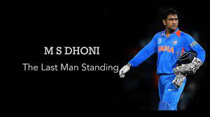

MAHENDRA SINGH DHONI
INTERNATIONAL CAREER
Start Of ODI
The Indian ODI team in the early 2000s saw Rahul Dravid as the wicket-keeper to ensure
that the wicket-keeper spot didn't lack in batting talent.[64] The team also saw the
entry of wicket-keeper/batsmen from the junior ranks, with talents like Parthiv Patel
and Dinesh Karthik (both India U-19 captains) named in the Test squads.[64] With Dhoni
making a mark in the India A squad, he was picked in the ODI squad for the Bangladesh
tour in 2004/05.[65] Dhoni did not have a great start to his ODI career, getting run
out for a duck on debut.[66] In spite of an average series
against Bangladesh, Dhoni was picked for the Pakistan ODI series.[67]